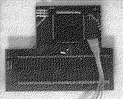

Previous
Next
TOC
Wenn man in die Versorgungsleitung des DMA-Chips (C025913-38) eines
1040STF eine Diode einschleift, streikt das Diskettenlaufwerk.
Wenn man die Diode weglässt, so funktioniert das Diskettenlaufwerk
wieder, aber der Rechner hängt sich bei größeren Kopieraktionen auf
der Platte weg und macht einen Reset.
A) Die Diode hilft nur bei den IMP Chips (DMA C100110-001) und beim
IMP Shifter (hier nicht von betroffen).
B) Man sollte die sechs Terminierungwiderstände RP1 bis RP6 (4,7 Kilo
ohm und 10 Kiloohm gegen 3,3 Kiloohm typen ersetzen (am besten gleich
sockeln), sowie die Bustreiber 74LS373 und 74LS244 gegen die Typen
74F373 und 74F244. Und an den Widerstand R4 einen weiteren 1k Wider-
stand parallel anlöten (Das hat bis jetzt immer zum Erfolg geführt.)
Diese Karte ist die Blitterchip Erweiterungskarte von Rolf Rocke
Computer für alle unverblitterten ST-Computer.

Der Blitter-Nachrüstsatz besteht aus einer Platine, einem ,Spezial-
sockel' und einem 3 adrigen Kabel mit Buchse. Der Blitter ist ein
DMA-fähiger Baustein, und als solcher muß er sich den Bus mit dem
DMA-Baustein für ACSI-DMA und Floppy sowie dem Prozessor teilen.
Deswegen muß erstmal der originale Prozessor ausgelötet werden und
die Pins 11 und 12 des 68000 (BG und BGACK) müssen nun mit dem MFP
und dem GLUE verschaltet werden. Aus diesem Grunde liegtjener
,Spezialsockel' bei. An besagten Pins (11 und 12) fehlen die Bein-
chen, die nötigen Verbindungen werden über das 3adrige Kabel herge-
stellt. Dazu müssen 3 Lötpads auf der Platine ausfindig gemacht wer-
den, was aber aufgrund der bebilderten Anleitung nicht allzu schwer
fallen dürfte.
Interessant wird der Einbau aber erst, wenn man schon diverse Erwei-
terungen eingebaut hat wie zum Beispiel die PAK-68 mit Umschaltpla-
tine, die ja auch auf den 68000 aufgelötet oder in einen entprechen-
den Sockel gesteckt wird.
Nur mit der PAK funktioniert der Blitter, aber die PUK-Umschaltpla-
tine verträgt sich nicht so ohne weiteres mit ihm. Es ist nötig, auf
der Umschaltplatine zwischen Pin 15 von IC 2 und +5 V einen 2.2 bis
3.3 kOhm Widerstand einzulöten.
ATARI empfiehlt bei Erweiterungen, die über den Systembus der neuen
MEGA STs angeschlossen werden, die Signale BR und BGACK über 4,7 kOhm
Pull-up-Widerstände abzuschließen. Vielleicht bringt diese Maßnahme
auch in Ihrem Rechner eine verbesserung.
weiterblättern
Kapitel Die Reparaturtips für 260/520/1040/MegaST, Seite 10